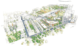
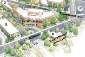

Where:
University of the Sciences in Philadelphia (USP)
600 South 43rd Street
Philadelphia, PA 19104-4495We're typically assigned Griffith Hall, Room "C" or "A", although we've also been known to end up in Rosenberger Hall, Room 101 or 102.
- Griffith Hall is the large, angled building labeled Building #1 on the map below. Be aware that the main gates to Griffith Hall are usually locked (these are large metal gates, over the main front door). Do not let this dissuade you; the side doors on either side of the main entrance are unlocked.
- Often, the door to Griffith Hall is locked at 7PM. If you find the door locked, please contact the security guard (usually in the booth in the parking lot) and tell them that the monthly PLUG (Philadelphia Linux User Group) meeting in Griffith Hall is tonight. If there is no one in the booth you can call UCS's public safety number at 215.895.1117 and they will radio personnel to unlock the door. Our sponsor is Zhiwei Liu in the Chemistry department. Security knows this and will almost always open the door for you and have it unlocked so other participants can enter without issue.
- Rosenberger is the building directly across the street from Griffith, labeled Building #6 on the map below.
Driving
Directions:Enter West Philadelphia however you like, and then get on either Walnut, Spruce, or Baltimore, and drive up to 42nd street. Turn South at 42nd, turn right on Baltimore (unless you were already on Baltimore), and the left again on 43rd street. Then drive south two blocks until you see the red USP banners hanging from the utility poles. Griffith is on your left (if driving South), and Rosenberger Hall is to your right. There is a parking lot directly adjacent to Rosenberger Hall labeled "VP" on the map, as well as plenty of street parking.
  USP has additional directions on their website, which may be helpful to individuals not familiar with how to reach West Philadelphia.
Public
Transportation:For those coming from Old City/Center City, you can take the number 11, 13, or 34 trolleys. The first one stops at 43rd and Woodland, and you have to walk 1/2 a block north on 43rd street until you get to Rosenberger Hall. If you take 13, you'll get off at 43rd and Chester, and walk south (1 block) until you get to Rosenberger Hall. If you take 34, get off at 43rd and Baltimore and walk south 2 blocks to Rosenberger Hall. Alternatively, you can take SEPTA's 42 bus from Center City, get off at 43rd and Spruce, and walk south approximately 5 blocks to Rosenberger Hall.
If you come from the suburbs west of the city, take trolley/bus to 69th street station, transfer to the El, go to 30th street station, and transfer to any of the trolleys mentioned above. Just cross over from the L stop to the trolley stop without leaving the station.
If you take train, the easiest thing is to go to 30th street station and then go to the trolley station and take one of the three trolleys mentioned above.
Site Contact:
Our room reservation at USP is provided courtesy of Zhiwei Liu and Guillermo Moyna in the Chemistry department, who initiated USP's Beowulf computing cluster. Currently, it is Zhiwei Liu who reserves the room for us.
Last modified: Fri Sep 3 19:42:47 EDT 2004
{kind=link}
{kind=link}